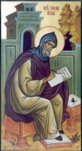

Ephraem Syrus. About A.D.
307

there was born at Nisibis,
in northern Mesopotamia, Ephraem or Ephraim Syrus, the most celebrated
father of the Syrian church, and famous not only as a theologian, but also
as a poet and hymn-writer. Historians differ as to the details of his life;
but it is known that having first been a pupil of James, bishop of Nisibis,
he finished his education at Edessa, where for the rest of his days he
chiefly resided. He visited Basil at Caesarea, in Cappadocia, and by him he
was ordained to the office of deacon. He died at Edessa in June, 373.
Ephraim was a most voluminous writer of commentaries, expository sermons,
hymns, and metrical homilies. Metrical Homilies, first mentioned in
connection with him, are a peculiar kind of composition, to which we know of
nothing in other literature exactly similar. The tracts in verse explanatory
of the Christian religion, circulated by missionaries in some parts of
India, and which the people like to read aloud in a kind of chant, seem most
nearly to resemble them. The Homilies are in metre, i.e. in lines containing
a fixed number of syllables, e.g. 4, 5, 6, 7, 8, or 12, as the case may be,
and are divided into strophes, but differ from hymns proper in their greater
length and more decidedly didactic character. We might have supposed them to
be poems intended to be simply read, but from notes found on manuscripts
giving directions as to the singing, it appears as though, at least in some
cases, they were actually sung or chanted in connection with religious
services. In neither the hymns nor the homilies is any regard paid to accent
or quantity, and only occasionally does there seem to have been an attempt
at rhyme or assonance. The main characteristics of Syriac poetry are (1) a
certain elevation of style, (2) division of the verses into strophep, and
(3) the use of lines or verses with a fixed number of syllables
The poetical compositions
of Ephraim, so far as printed, are as follows, beginning with his works
edited by J. S. Assemani and P. Benedict at Rome, in 1732-46.
(1) Eleven metrical expositions, in heptasyllabic and pentasyllabic metre,
of portions of Scripture treating of the Creation, the Temptation of Eve,
the Mission of Jonah, and the Repentance of the Ninevites. The last-named is
the most striking and the longest, extending to between 500 and 600 strophes
of four lines each. Of the use made of it by the Nestorian Christians of the
present day we shall speak in the second part of this article.
(2) Thirteen discourses on Christ's Nativity. These are of various lengths
and metres. The last is tetra-syllabic, in strophes of 10 lines, every tenth
line being a doxology. The life of Christ is supposed by the author to have
extended to thirty years, and to every one of these years is assigned an act
of praise from some created beings, beginning with the cherubim in the first
year, and ending with the dead who have lived again, the living who have
repented, and heaven and earth, which through Christ have been reconciled,
in the thirtieth. Dr. Burgess says that this is "a very beautiful
production, tastefully conceived, and carried out in a masterly manner."
(3) Next come 56 homilies in various metres against "False Doctrines,"
especially those of Bardesanes, Marcion, and the Manichaeans. Elsewhere we
are told that it was Ephraim's desire to counteract the influence of these
heretical songs, as well as to provide a substitute for profane games and
noisy dances, which prompted him to compose hymns and train choirs, " in the
midst of whom he stood, a spiritual harper, and arranged for them different
kinds of songs, and taught them the variation of chants, until the whole
city was gathered to him and the party of the adversary was put to shame."
(4) Then follow 87 homilies against Rationalists or Free Thinkers, in which
occur many curious and highly artificial arrangements of metres. These are
succeeded by a collection of seven homilies, forming a separate work,
entitled "The Pearl, concerning Faith." This poem is tetra-syllabic, in
strophes of 10 lines each, and highly fanciful in conception, though not
without pas¬sages of beauty. A pearl is treated as suggestive of truths
connected with Christ and His Church.
(5) Four other controversial homilies follow, after which come the pieces
which may be more properly called Hymns. Of these perhaps the most
interesting are 85 relating to "Death," apparently intended to be used in
funeral services
(6) This collection of Funeral Hymns is followed by four short pieces on the
"Freedom of the Will," the strophes of which have an alphabetical
arrangement, like the Hebrew of the 119th Psalm. The succeeding 16 homilies
have the general title "Exhortations to Penitence," but among them are found
morning and evening hymns, and a hymn for the Lord's day.
(7) Next come twelve homilies on the "Paradise of Eden," and finally, in the
Roman edition of Ephraim's works, 18 discourses on various subjects in
pentasyllabic and hexasyllabic metres. But in 1866, Bichll pub. "Carmina
Nisibena," 21 in number, the subject of most of them being the struggle
between the Persian monarch, Sapor, and the Romans. The rest are on the
"Overthrow of Satan," the "Resurrection of the Body," and kindred topics.
In 1882 and 1886 Lamy
published 2 vols., entitled S. Ephraemi Syri Hymni et
Sermones, containing hitherto unpublished metrical homilies and hymns,
on the Epiphany, the Nativity, the Blessed Virgin, the Passover, the
Crucifixion, the Resurrection, &c.
--Julian, John A
Dictionary of Hymnology, 1907
Strengthen for
service, Lord, the hands. [Holy Communion.] This, in The
English Hymnal, 1906, is a metrical rendering of a prayer in the
Malabar Liturgy (it is also in the Liturgy of the Nestorians; see F. E.
Brightman's Liturgies Eastern and Western, 1896,
p. 300) said by the Deacon while the people are communicating. It was
versified by Mr. C. W. Humphreys (from the prose tr. in Dr. J. M.
Neale's Liturgies of S. Mark, S. James, S. Clement, S.
Chrysostom and the Church of Malabar, 1859, p. 156; Canon Brightman
informs me that the Syriac text is in the Rome ed., 1844, of the Uniat
Missal of Malabar, which is the old Nestorian rite of the
Christians of St. Thomas, as modified in South India in 1599),
contributed to The English Hymnal, and partly
rewritten, with his consent, by Mr. Dearmer. [Rev. James Mearns, M.A.]
--John Julian, Dictionary
of Hymnology, New Supplement (1907)
Hymn #201
Text: St. Ephraim the Syrian (c.306-373);
Translation: C. W. Humphreys (1840-1921)
Music: David McKinley Williams (1887-1978)
Tune name: MALABAR
THE TEXT
The fourth-century Ephraim the Syrian was a deacon and theologian who left
behind a significant body of sermons and hymns, including this Communion
hymn:
Strengthen, O Lord, the hands which are stretched out to receive the Holy
Thing: vouchsafe that they may daily bring forth fruit to thy divinity; that
they may be worthy of all things which they have sung to thy praise within
thy sanctuary, and may ever laud thee. Grant, moreover, my Lord, that the
ears which have heard the voice of thy songs, may never hear the voice of
clamor and dispute. Grant also that the eyes which have seen thy great love,
may also behold thy blessed hope; that the tongues which have sung the
Sanctus may speak the truth. Grant that the feet which have walked in the
church may walk in the region of light: that the bodies which have tasted
thy living Body may be restored in newness of life. On this congregation
also, which adores thy divinity, let thy aids be multiplied, and let thy
great love remain with us; and by thee may we abound in the manifestation of
thy glory, and open the door to the prayers of all of us. We all then, who
have drawn near by the gift of the grace of the Holy Ghost, and to whom it
has been vouchsafed to become fellow participators in the reception of these
mysteries, most excellent, holy, divine, and quickening, let us all praise
and exult in God, the Giver of them.
This prose translation by John Mason Neale (1818-1866) was condensed and
versified by Charles William Humphreys (1840-1921).
1. Strengthen for service, Lord, the hands
that holy things have taken;
let ears that now have heard thy songs
to clamour never waken.
2. Lord, may the tongues which “Holy” sang
keep free from all deceiving;
the eyes which saw thy love be bright,
thy blessèd hope perceiving.
3. The feet that tread thy holy courts
from light do thou not banish;
the bodies by thy Body fed
with thy new life replenish.
THE TUNE
Welsh-born American church musician, composer, and teacher David McKinley
Williams wrote this tune especially for this hymn text, first published in
the 1940 edition of The Hymnal.
The tune name — MALABAR — comes from a region of South India, home of the
Church of Malabar Syrian Catholics.
Below is Andrew Remillard’s rendition of this hymn on piano.

.jpg){kind=link}